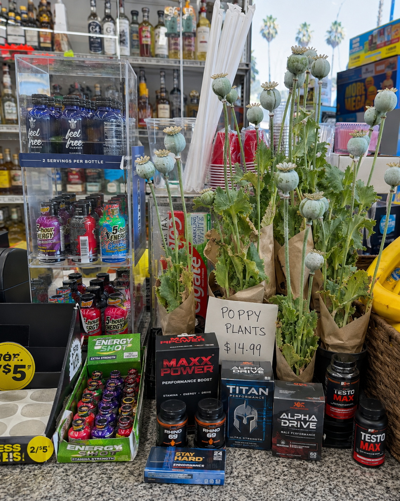

Documented single-drug fatalities
Two deaths from acute mitragynine intoxication
A 2022 forensic case report described two deaths in which comprehensive toxicology found no other drugs or alcohol.
- A 37-year-old man suddenly collapsed while bicycling. Mitragynine measured 2,325 ng/mL. The medical examiner certified acute mitragynine intoxication as the cause of death.
- A previously healthy 33-year-old man lost consciousness while driving slowly. Mitragynine measured 3,809 ng/mL. No significant trauma or competing intoxicant was found. The cause of death was again acute mitragynine intoxication.
The authors concluded that mitragynine was the single agent implicated in both deaths.
A third single-drug fatality
A 2023 case report described a 32-year-old man who suffered seizures and cardiac arrest. Toxicology detected mitragynine in blood, liver, and gastric contents, but no prescription drugs, illicit drugs, or alcohol. The death was ruled an accidental overdose caused by acute mitragynine intoxication with underlying medical conditions.
Mata et al. 2023
Mata DC, Chang HH. Postmortem Mitragynine Distribution in a Single Drug Fatality Case. Acad Forensic Pathol. 2023 Mar;13(1):34-40. 2023 Mar 30.
Download PDFNevada and earlier forensic literature
A Northern Nevada medical-examiner study identified a death in which mitragynine was considered the sole intoxicant, at 950 ng/mL. Its literature review also found ten previously reported fatalities in which kratom was the sole intoxicant.
Schmitt et al. 2021
Schmitt J, Bingham K, Knight LD. Kratom-Associated Fatalities in Northern Nevada—What Mitragynine Level Is Fatal? Am J Forensic Med Pathol. 2021 Dec 1;42(4):341-349.
Download PDFFlorida identified dozens of mitragynine-only cases
A 2025 statewide analysis found 36 Florida decedents with mitragynine as the sole substance identified during 2020–2021. Twenty were classified as drug-toxicity deaths.
Suriaga et al. 2025 (Florida)
Suriaga AA, Tappen RM, McCurdy CR, Newman D, Grundmann O, Kelly JF. The Associations of Kratom (Mitragynine), Opioids, Other Substances, and Sociodemographic Variables to Drug Intoxication–Related Mortality. Journal of Addiction Medicine. 2025;19(3):306–313.
Download PDFNational poison-center data
CDC researchers identified 233 kratom-associated deaths reported to poison centers from 2015–2025. Of those, 184 involved multiple substances—meaning 49 were reported as single-substance kratom exposures. These are surveillance reports rather than complete autopsy files, but they are still incompatible with the claim of “zero.”
MMWR 2026
EB, Thomas YT, Holstege CP, Farah R. Increases in Kratom-Related Reports to Poison Centers — National Poison Data System, United States, 2015–2025. MMWR Morb Mortal Wkly Rep 2026;75:139–145.
Download PDFSole-substance deaths are not the Schedule I test
The obsession with finding a perfectly “kratom-only” death also misunderstands federal scheduling law.
Schedule I classification is based on whether a substance has:
- A high potential for abuse;
- No currently accepted medical use in treatment in the United States; and
- A lack of accepted safety for use under medical supervision.
Federal law also directs regulators to consider abuse patterns, pharmacological effects, dependence liability, and risks to public health. It does not require proof that the substance has killed someone while acting entirely alone.
Opium Poppy — A Cautionary Parallel

Consider raw opium-poppy latex. Can an advocate produce a modern peer-reviewed case in which chemically unadulterated poppy latex—and absolutely nothing else—was proven to be the sole cause of death? Probably not.
Does that mean raw opium should be sold beside energy drinks at gas stations? Of course not.
A lack of pristine, single-substance fatalities would not establish accepted medical use, eliminate abuse potential, prove safety under medical supervision, or erase dependence and withdrawal. The same logic applies to kratom.
The honest conclusion
Not every mitragynine-positive death was caused by kratom. But the categorical claim that there are no kratom-only deaths is demonstrably false.
The evidence includes peer-reviewed single-drug case reports, medical-examiner findings, statewide mortality data, and national poison-center deaths.
Even without those cases, “sole-cause death” would still be the wrong legal and scientific standard for deciding whether an unapproved, opioid-active substance belongs in Schedule I.